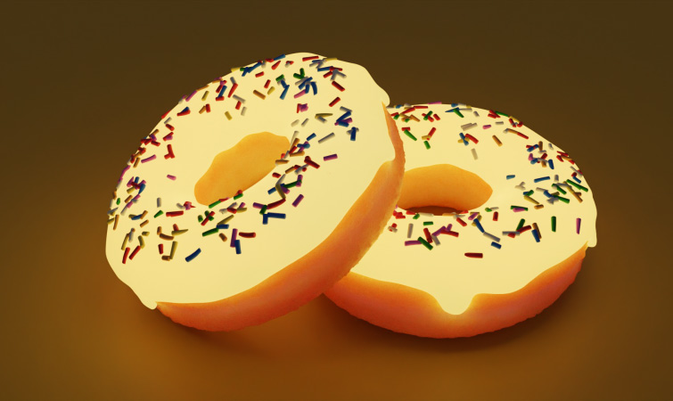

Mystery Donut

About the dish
To be a donut, or not to be a donut, that is the question
Well even we are not sure. It kinda just phases into existence and vanishes after you take a bite. Some say the donut will appear
before you and your next of kin till the end of time.
Ingredients
- A regular donut
- A cardboard box
- Radioactive isotope of your choice
- Mr.Donut's special Mystery Donut glazeTM (avaiable only at select retailers)
- Spare microwave
Did you know: We contemplated naming this Schrodinger's Donut, but it just isn't the same y'know.
Steps
-
Unpack Mr.Donut's speical Mystery Donut glazeTM and microwave the bottle. Do note that the microwave will explode, take
adequate precautions.
- Remove the bottle, safely,from the now unusable microwave and unscrew the cap.
- Apply the glaze on your donut. We recommend using the entire bottle.
- Place the donut in your cardboard box. Seal the box.
- Close the box and never open it ever again. Store it someplace safe so that it doesn't accidentally open.
- If everything worked right, you should be seeing a donut appear before you in a few min. Take a bite, and it will disappear!
-
Note: The donut will NOT go away until you take a bite. But you could delay its appearance by hurling insults at it (the donut
will question its existence). It also find a way to replenish itself, thank the
enslaved volunteer scientists at Mr.Donut for that!